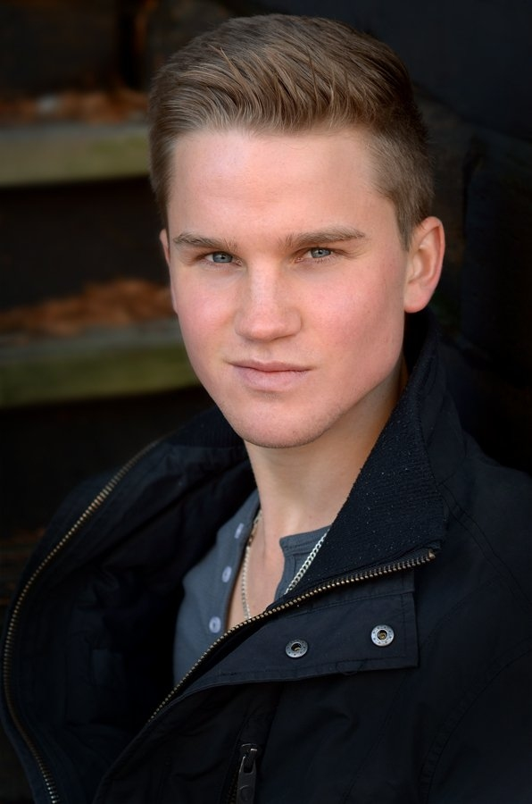

სტივენ დენიელ ჯო ბოერსმა (ინგლ. Stephen Daniel Jo Boersma) — კანადელი მსახიობი, რომელმაც შეასრულა უსახელო ბიჭისა და ახალგაზრდა კელებ კალჰუნის როლები „ბეიტსის მოტელში“.
| სტივენ ბოერსმა | |
|---|---|
|  | |
| სრული სახელი: | სტივენ დენიელ ჯო ბოერსმა |
| მშობლიური სახელი: | Stephen Daniel Jo Boersma |
| დაიბადა: | 29 იანვარი, 1992 ონტარიო, კანადა |
| გარდაიცვალა: |
15 დეკემბერი, 2021 (29 წლის) სან-დიეგო, კალიფორნია, აშშ |
| პერსონაჟები: |
• უსახელო ბიჭი • კელებ კალჰუნი |
| IMDb: | სტივენ ბოერსმა |
სტივენ დენიელ ჯო ბოერსმა (ინგლ. Stephen Daniel Jo Boersma) — კანადელი მსახიობი, რომელმაც შეასრულა უსახელო ბიჭისა და ახალგაზრდა კელებ კალჰუნის როლები „ბეიტსის მოტელში“.
იგი ასევე ცნობილი იყო როლებისთვის ტელეფილმში „შტორმის მაძიებლები“ (ინგლ. Storm Seekers) და ტელესერიალებში „ახალგაზრდა მთვრალი ხულიგანი“ (ინგლ. Young Drunk Punk), „მე ზომბი“ (ინგლ. iZombie) და „#სგდ'“ (ინგლ. #Sti').